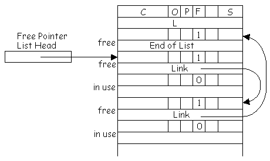
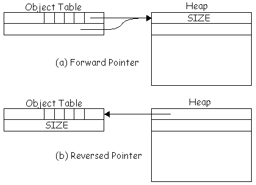

|
| Figure 30.5 |
| Figure 30.1 |
| HeapSegmentCount | The number of heap segments used in the implementation. |
| FirstHeapSegment | The index of the first memory segment used to store the heap. |
| LastHeapSegment | The index of the last memory segment used to store the heap (FirstHeapSegment + HeapSegmentCount - 1). |
| HeapSpaceStop | The address of the last location used in each heap segment. |
| HeaderSize | The number of words in an object header (2).
|
| Figure 30.2 |
| Figure 30.3 |
| Figure 30.4 |
|
| Figure 30.5 |
| ObjectTableSegment | The number of the memory segment containing the object table. |
| ObjectTableStart | The location in ObjectTableSegment of the base of the object table. |
| ObjectTableSize | The number of words in the object table (an even number <= 64K). |
| HugeSize | The smallest number that is too large to represent in an eight-bit count field; that is, 256. |
|
The object table index of the object nil.
|
|  |
| Figure 30.6 |
| FreePointerList | The location of the head of the linked list of free object table entries. |
| BigSize | The smallest size of chunk that is not stored on a list whose chunks are the same size. (The index of the last free chunk list). |
| FirstFreeChunkList | The location of the head of the linked list of free chunks of size zero. Lists for chunks of larger sizes are stored in contiguous locations following FirstFreeChunkList. Note that the lists at FirstFreeChunkList and FirstFreeChunkList + 1 will always be empty since all chunks are at least two words long. |
| LastFreeChunkList | The location of the head of the linked list of free chunks of size BigSize or larger. |
|
Any sixteen-bit value that cannot be an object
table index, e.g., 216 - 1.
|
| Figure 30.7 |
|
The index of the heap segment currently being
used for allocation.
|
|  |
| Figure 30.8 |
The compactCurrentSegment routine invokes the above routines in the proper order and then creates the single free chunk at the top of the heap segment.
A
Simple Reference-counting Collector
| Figure 30.9 |
object pointer access